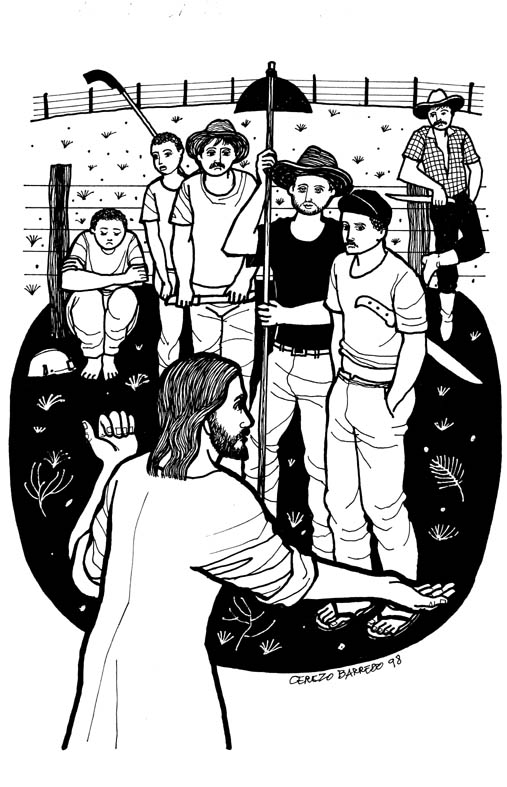
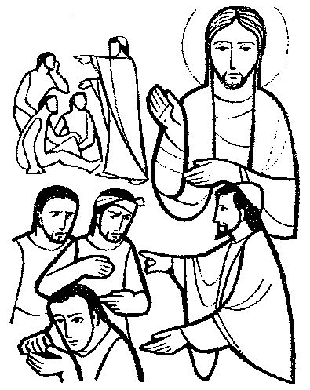

www.logrus.ca Year
A
Proper 20
This week's lessons: Exodus 16:2-15 and Psalm 105:1-6, 37-45 • Jonah 3:10-4:11 and Psalm 145:1-8 • Philippians 1:21-30 • Matthew 20:1-16
Inter-generational Lectionary Study
Opening
Opening prayer by leader, or invite another participant to pray, or use:
Almighty God, who has caused all Holy Scripture to be written for our learning, open our ears and hearts today to learn from your word and from one another, we ask in Jesus' Name. Amen
Set the calendar-clock to the right date. Pentecost is the season of the church's growth, beginning with Pentecost Day which is the birthday of the church, and continuing to the end of the church year.Its colour is green.
Today, the Gospel reviews for us ....
Review of Last Week
What was the sermon on? -
What was the Gospel lesson? -
Did anyone have any insights about...
1. What is Jesus' standard for forgiveness – should you forgive the 491st time too?
2. When have you struggled to forgive?
3. How and where do we find the power to forgive?
4. What have you been forgiven – especially by your brothers and sisters in Christ?
5. How does the secular concept of “forgive and forget” differ from biblical forgiveness?
Moreover if thy brother shall trespass against thee, go and tell him his fault between thee and him alone: if he shall hear thee, thou hast gained thy brother.
But if he will not hear thee, then take with thee one or two more, that in the mouth of two or three witnesses every word may be established.
And if he shall neglect to hear them, tell it unto the church: but if he neglect to hear the church, let him be unto thee as an heathen man and a publican.
Verily I say unto you, Whatsoever ye shall bind on earth shall be bound in heaven: and whatsoever ye shall loose on earth shall be loosed in heaven.
Again I say unto you, That if two of you shall agree on earth as touching any thing that they shall ask, it shall be done for them of my Father which is in heaven.
For where two or three are gathered together in my name, there am I in the midst of them.
or
What parallels do you see between this reading and the Exodus reading?
Pew-work Hand-outs
“Pew-work” is like Home-work, except that it is done in the pews, instead of being done at home. Because it is focussed on the readings (as the sermon, presumably, also is) it can be done during the sermon to help the listener concentrate. Or, it can be done while waiting for everyone else to finish their communion. It isn't done during prayers, or hymns, or the readings, because
During Prayers, we pray
During Hymns, we sing
During the Readings, we listen
Preschool Pew-work
Cerezo Barredo's Lectionary illustrations -- http://www.servicioskoinonia.org/cerezo/dibujosA/48OrdinarioA25.jpg
Primary School Pew-work

Misioneros del Sagrado Corazón en el Perú: From http://www.mscperu.org/grafic/graficoslit/aTO/picAto/25_to_a.jpg
A N
A R E B B K
|
(Matthew 20:15 NRSV) Am I not allowed to do what I choose with what belongs to me? Or are you envious because I am generous?' |
Word List |
from http://www.efree.mb.ca/lectionarypuzzles free to distribute for free with this notice. Words are in a straight line left to right or top to bottom |
||
1. Where did the man
who owned the vineyard go to hire day
laborers?
_____________________________________________________________________________
2. What times of the
day did he go to hire
workers?
_____________________________________________________________________________
3. How did he pay
the
workers?
_____________________________________________________________________________
4. What did the
workers that he hired first
do?
_____________________________________________________________________________
5. What did the
owner of the vineyard
say?
_____________________________________________________________________________
Questions taken from Sunday School Lessons; http://www.sundayschoollessons.com/baplord.htm
Across 2. begin with the ones who were hired ____ 4. Jesus was telling what the _______ of heaven would be like 5. again about three in the _________ Down 1. I ____ you exactly what we agreed on 3. Everyone who is now _____ will be last Created by Puzzlemaker at DiscoverySchool.com |
As you think of examples of generosity in our own community, how is it sometimes begrudged? _______________________________________________________________________________________________________________________________________________________________________________________________________________________________________________________________________________________________________________________________________________________________________________________________________________________________
Across 6. again about three in the _________ 8. begin with the ones who were hired ____ 9. a man went out to ____ some workers for his vineyard. Down 1. Jesus was telling what the _______ of heaven would be like 2. they began complaining to the owner of the ______ 3. He said he would ___ them what was fair 4. the man saw some other ______ standing in the market 5. Everyone who is now _____ will be last 7. I ____ you exactly what we agreed on Created by Puzzlemaker at DiscoverySchool.com |
|
What Scripture is the Sermon is based on? |
__________________________________ |
|
What is the main point of the Sermon? |
__________________________________ |
|
Write down any figures of speech used by the preacher (Metaphors, Similes, hyperbole) |
__________________________________ |
|
Write down any new, unusual or particularly interesting words the preacher uses |
_______________
|
Adult Pew-work
Focus Statement: “"Only, live your life in a manner worthy of the gospel of Christ..."
|
_________________________________________ |
|
_________________________________________ |
|
_________________________________________ |
|
_________________________________________ |
|
_________________________________________ |
Next week: Exodus 17:1-7 and Psalm 78:1-4, 12-16 • Ezekiel 18:1-4, 25-32 and Psalm 25:1-9 • Philippians 2:1-13 • Matthew 21:23-32